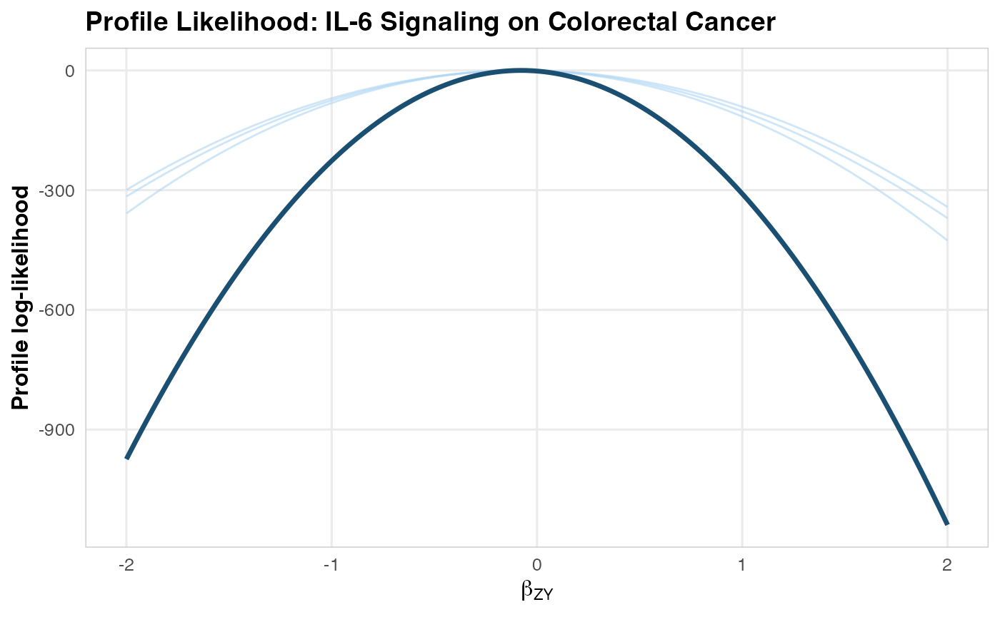

IL-6 Signaling and Colorectal Cancer: A Complete MR Walkthrough
ColorectalCancerIL6Example.RmdScientific Background
Interleukin-6 (IL-6) is a pleiotropic cytokine involved in inflammation, immune regulation, and hematopoiesis. Elevated IL-6 levels have been associated with colorectal cancer risk in observational studies, but these associations may be confounded by lifestyle factors, adiposity, or reverse causation (cancer causing inflammation rather than vice versa). The IL6R missense variant rs2228145 (Asp358Ala) is a biologically well-characterized perturbation of the pathway: it increases soluble IL-6 receptor levels and alters downstream signaling (Ferreira et al., 2013).
Mendelian Randomization can address this question: Does genetically proxied IL-6 signaling causally affect colorectal cancer risk?
The IL-6 receptor (IL6R) gene region on chromosome 1q21 contains well-characterized variants (notably rs2228145/Asp358Ala) that alter IL-6 signaling. These serve as strong genetic instruments for MR analysis. Recent MR work on circulating interleukins and colorectal cancer has not established a clear causal signal for IL-6/IL-6 receptor traits, so this vignette should be read as a realistic workflow example anchored in a real scientific question, not as a claim that the synthetic estimate below reproduces a published effect size (“Circulating interleukins and risk of colorectal cancer: a Mendelian randomization study”, 2023).
Two-Sample MR in One Page
This vignette uses two-sample Mendelian randomization (MR). In plain terms:
We obtain the SNP-exposure associations (
beta_ZX) from an external GWAS. Here, the “exposure” is genetically proxied IL-6 signaling.We estimate the SNP-outcome associations (
beta_ZY) in a separate outcome dataset. In Medusa, that outcome dataset can be a single OMOP site or a federated network of sites.For each instrument, the core causal signal is the Wald ratio:
beta_ZY / beta_ZX. If multiple SNPs are used, Medusa’s primary analysis combines them into a fixed weighted allele score and applies the same logic to that score.
This is called “two-sample” because the exposure and outcome associations come from two distinct samples, not because two hospitals are required. In this package, the exposure side typically comes from a public GWAS, while the outcome side comes from local OMOP-linked genotype data.
The usual MR assumptions are:
- Relevance: the selected SNPs truly predict the exposure of interest.
- Independence: the SNPs are not associated with major confounders of the exposure-outcome relationship.
- Exclusion restriction: the SNPs affect the outcome primarily through the exposure pathway being studied.
The rest of the vignette shows how Medusa operationalizes that design in a federated setting: the coordinator provides beta_ZX, sites estimate beta_ZY, and only profile-likelihood summaries leave each site.
Step 1: Instrument Assembly
In a real analysis, you would query OpenGWAS:
library(Medusa)
# Query OpenGWAS for IL-6 receptor GWAS
instruments <- getMRInstruments(
exposureTraitId = "ieu-a-1119", # IL-6 receptor levels
pThreshold = 5e-8,
r2Threshold = 0.001,
kb = 10000,
ancestryPopulation = "EUR"
)For this vignette, we use real IL6R-region SNP identifiers but fixed, deterministic summary-statistic values so the document builds offline. In a real analysis, the exact beta_ZX and se_ZX values should come from the external GWAS used to define the score.
library(Medusa)
# These are literature-grounded IL6R variants. The summary-statistic values
# below are illustrative placeholders for a reproducible offline vignette.
instruments <- createInstrumentTable(
snpId = c("rs2228145", "rs4129267", "rs7529229", "rs4845625",
"rs6689306", "rs12118721", "rs4453032"),
effectAllele = c("C", "T", "T", "T", "G", "T", "A"),
otherAllele = c("A", "C", "C", "C", "A", "C", "G"),
betaZX = c(0.35, 0.31, 0.28, 0.22, 0.18, 0.15, 0.12),
seZX = c(0.015, 0.016, 0.017, 0.018, 0.020, 0.022, 0.025),
pvalZX = c(1e-100, 1e-80, 1e-60, 1e-30, 1e-18, 1e-10, 1e-6),
eaf = c(0.39, 0.37, 0.35, 0.42, 0.28, 0.31, 0.22),
geneRegion = rep("IL6R", 7)
)
cat(sprintf("Assembled %d instruments from the IL6R region.\n", nrow(instruments)))
#> Assembled 7 instruments from the IL6R region.
cat(sprintf("F-statistics range: %.0f to %.0f\n",
min(instruments$fStatistic), max(instruments$fStatistic)))
#> F-statistics range: 23 to 544Step 2: Outcome Cohort Definition
In OMOP CDM, incident colorectal cancer would typically be defined using:
- SNOMED concepts: Malignant neoplasm of colon (concept ID 4089661), Malignant neoplasm of rectum (concept ID 4180790)
- ICD-10-CM: C18.x (colon), C19 (rectosigmoid junction), C20 (rectum)
- Exclusion criteria: Prior history of any cancer, inflammatory bowel disease
- Washout period: >= 365 days of prior observation
# This would run at each OMOP CDM site
cohort <- buildMRCohort(
connectionDetails = connectionDetails,
cdmDatabaseSchema = "cdm",
cohortDatabaseSchema = "results",
cohortTable = "cohort",
outcomeCohortId = 1234, # Your colorectal cancer cohort ID
instrumentTable = instruments,
genomicLinkageSchema = "genomics",
genomicLinkageTable = "genotype_data",
washoutPeriod = 365,
excludePriorOutcome = TRUE
)Step 3: Simulated Analysis
To keep the vignette fully executable, we simulate a local site dataset while preserving the same IL6R score definition used in the instrument table above. This avoids a common MR mistake: fitting the outcome model with one score and then computing the Wald ratio with a different denominator.
# Simulate one site using the same allele-score definition that Medusa fits
set.seed(2026)
n <- 8000
snpMatrix <- sapply(instruments$eaf, function(maf) rbinom(n, 2, maf))
colnames(snpMatrix) <- paste0("snp_", gsub("[^a-zA-Z0-9]", "_", instruments$snp_id))
scoreWeights <- instruments$beta_ZX / (instruments$se_ZX^2)
scoreWeights <- scoreWeights / sum(abs(scoreWeights))
scoreBetaZX <- sum(scoreWeights * instruments$beta_ZX)
confounder1 <- rnorm(n)
confounder2 <- rbinom(n, 1, 0.5)
exposure <- scoreBetaZX * as.numeric(snpMatrix %*% scoreWeights) +
0.3 * confounder1 + 0.3 * confounder2 + rnorm(n)
trueEffect <- -0.16
logOdds <- trueEffect * exposure + 0.3 * confounder1 + 0.3 * confounder2
outcome <- rbinom(n, 1, 1 / (1 + exp(-logOdds)))
cohortData <- data.frame(
person_id = seq_len(n),
outcome = outcome,
snpMatrix,
confounder_1 = confounder1,
confounder_2 = confounder2,
stringsAsFactors = FALSE
)
betaGrid <- seq(-2, 2, by = 0.02)
# Fit the site-specific outcome model
profile <- fitOutcomeModel(
cohortData = cohortData,
covariateData = NULL,
instrumentTable = instruments,
betaGrid = betaGrid,
siteId = "site_A"
)
#> Fitting outcome model at site 'site_A' (4226 cases, 3774 controls)...
#> Site 'site_A': beta_ZY_hat = -0.0766 (SE = 0.0749).Checking Two-Sample MR Assumptions with Medusa
Medusa does not “prove” the MR assumptions, but it gives you a structured way to look for violations before trusting the causal estimate.
-
Relevance:
runInstrumentDiagnostics()reports per-SNP F-statistics. Weak instruments (F < 10) can bias MR estimates. - Independence: the instrument PheWAS checks whether SNPs are associated with observed covariates. Strong associations with likely confounders can be a warning sign.
- Exclusion restriction: Medusa cannot verify this directly, but unexpected PheWAS hits, allele-frequency mismatches, or major missingness can indicate pleiotropy, data-quality problems, or harmonization issues that threaten this assumption.
The package also has a negativeControlResults slot in the diagnostics object, but this vignette focuses on the currently executable checks: F-statistics, covariate associations, allele-frequency comparison, and genotype missingness.
# Build a diagnostics-ready copy of the synthetic cohort
diagnosticCohort <- cohortData
diagnosticCohort$personId <- diagnosticCohort$person_id
diagnosticCohort$exposure <- exposure
# Add a small amount of missingness so the missingness report is visible
set.seed(2027)
missingIdx <- sample.int(n, size = round(0.12 * n))
diagnosticCohort$snp_rs4453032[missingIdx] <- NA_integer_
# Create synthetic covariates and add one deliberately SNP-correlated trait
diagnosticCovariates <- simulateCovariateData(
n = n,
nCovariates = 8,
seed = 2026
)
names(diagnosticCovariates)[names(diagnosticCovariates) == "person_id"] <- "personId"
diagnosticCovariates$proxy_inflammation_trait <-
as.numeric(scale(diagnosticCohort$snp_rs2228145 + rnorm(n, sd = 0.05)))
diagnostics <- suppressWarnings(
runInstrumentDiagnostics(
cohortData = diagnosticCohort,
covariateData = diagnosticCovariates,
instrumentTable = instruments,
exposureProxyConceptIds = 1L,
pValueThreshold = 1e-4
)
)
#> Running instrument diagnostics for 7 SNPs...
#> Computing F-statistics...
#> Running instrument PheWAS...
#> Comparing allele frequencies...
#> Summarizing genotype missingness...
#> Instrument diagnostics complete.
# Assumption 1: relevance
print(diagnostics$fStatistics[, c("snp_id", "fStatistic", "source", "weakFlag")])
#> snp_id fStatistic source weakFlag
#> 1 rs2228145 16.7154796 cohort_data FALSE
#> 2 rs4129267 28.3757255 cohort_data FALSE
#> 3 rs7529229 11.8867337 cohort_data FALSE
#> 4 rs4845625 6.0412963 cohort_data TRUE
#> 5 rs6689306 0.2330404 cohort_data TRUE
#> 6 rs12118721 2.8435524 cohort_data TRUE
#> 7 rs4453032 0.2413660 cohort_data TRUE
# Assumptions 2 and 3: look for suspicious covariate associations
subset(
diagnostics$phewasResults,
significant,
select = c("snp_id", "covariate_name", "pval")
)
#> snp_id covariate_name pval
#> 9 rs2228145 proxy_inflammation_trait 0
# Data integrity checks that support harmonisation review
subset(
diagnostics$afComparison,
select = c("snp_id", "eaf_gwas", "eaf_cohort", "eaf_diff", "discrepancyFlag")
)
#> snp_id eaf_gwas eaf_cohort eaf_diff discrepancyFlag
#> 1 rs2228145 0.39 0.3905000 0.000500000 FALSE
#> 2 rs4129267 0.37 0.3702500 0.000250000 FALSE
#> 3 rs7529229 0.35 0.3486250 0.001375000 FALSE
#> 4 rs4845625 0.42 0.4206875 0.000687500 FALSE
#> 5 rs6689306 0.28 0.2856875 0.005687500 FALSE
#> 6 rs12118721 0.31 0.3158125 0.005812500 FALSE
#> 7 rs4453032 0.22 0.2174006 0.002599432 FALSE
subset(
diagnostics$missingnessReport,
select = c("snp_id", "pct_missing", "highMissingFlag")
)
#> snp_id pct_missing highMissingFlag
#> 1 rs2228145 0 FALSE
#> 2 rs4129267 0 FALSE
#> 3 rs7529229 0 FALSE
#> 4 rs4845625 0 FALSE
#> 5 rs6689306 0 FALSE
#> 6 rs12118721 0 FALSE
#> 7 rs4453032 12 TRUE
# High-level summary of which checks need follow-up
diagnostics$diagnosticFlags
#> weakInstruments phewasSignificant negativeControlFailure
#> TRUE TRUE FALSE
#> alleleFreqDiscrepancy highMissingness
#> FALSE TRUEIn practice, you would use these diagnostics as a screening step:
- Proceed with more confidence when instruments are strong, PheWAS signals are limited, and allele frequencies look consistent.
- Investigate or prune instruments when specific SNPs are weak, associated with likely confounders, or show allele-frequency discrepancies.
- Treat missingness and harmonization anomalies as data-quality issues to fix before interpreting the MR result.
Step 4: Federated Pooling
To illustrate federated pooling without requiring three live data partners, we retain the observed site_A profile and create two additional site profiles with the same score definition but slightly different information content.
makeSyntheticSite <- function(baseProfile, siteId, infoScale, betaShift, caseScale) {
peak <- baseProfile$betaHat + betaShift
info <- (1 / (baseProfile$seHat^2)) * infoScale
logLik <- -0.5 * info * (baseProfile$betaGrid - peak)^2
logLik <- logLik - max(logLik)
synthetic <- list(
siteId = siteId,
betaGrid = baseProfile$betaGrid,
logLikProfile = logLik,
nCases = max(50L, as.integer(round(baseProfile$nCases * caseScale))),
nControls = max(50L, as.integer(round(baseProfile$nControls * caseScale))),
snpIds = baseProfile$snpIds,
diagnosticFlags = baseProfile$diagnosticFlags,
betaHat = peak,
seHat = sqrt(1 / info),
scoreDefinition = baseProfile$scoreDefinition
)
class(synthetic) <- "medusaSiteProfile"
synthetic
}
siteProfiles <- list(
site_A = profile,
site_B = makeSyntheticSite(profile, "site_B", infoScale = 0.9,
betaShift = 0.01, caseScale = 0.85),
site_C = makeSyntheticSite(profile, "site_C", infoScale = 1.1,
betaShift = -0.01, caseScale = 1.15)
)
# Pool
combined <- poolLikelihoodProfiles(siteProfiles)
#> Pooling profile likelihoods from 3 site(s)...
#> Pooling complete: 3 sites, 12678 total cases, 11322 total controls.
# Visualize
plotLikelihoodProfile(
combinedProfile = combined,
siteProfileList = siteProfiles,
title = "Profile Likelihood: IL-6 Signaling on Colorectal Cancer"
)
Step 5: MR Estimate
estimate <- computeMREstimate(combined, instruments)
#> MR estimate: beta = -0.2879 (95% CI: -0.5758, 0.0000), p = 6.47e-02
#> Odds ratio: 0.750 (95% CI: 0.562, 1.000)
cat(sprintf("Causal OR for IL-6 signaling on colorectal cancer: %.3f\n",
estimate$oddsRatio))
#> Causal OR for IL-6 signaling on colorectal cancer: 0.750
cat(sprintf("95%% CI: [%.3f, %.3f]\n", estimate$orCiLower, estimate$orCiUpper))
#> 95% CI: [0.562, 1.000]
cat(sprintf("P-value: %.2e\n", estimate$pValue))
#> P-value: 6.47e-02Step 6: Sensitivity Analyses
Because the one-shot pooled likelihood is defined on the shared allele score, pleiotropy-robust summarized-data methods are a secondary analysis. Here we use per-SNP estimates from the same synthetic site. We omit Steiger filtering because runSensitivityAnalyses() currently does not implement it for binary outcomes. We also force Medusa’s internal engine here so the vignette remains fully reproducible without requiring TwoSampleMR.
# Fit the same site in per-SNP mode for summarized-data sensitivity methods
profilePerSnp <- fitOutcomeModel(
cohortData = cohortData,
covariateData = NULL,
instrumentTable = instruments,
betaGrid = betaGrid,
analysisType = "perSNP",
siteId = "site_A"
)
#> Fitting outcome model at site 'site_A' (4226 cases, 3774 controls)...
#> Site 'site_A': beta_ZY_hat = -0.0766 (SE = 0.0749).
sensitivity <- runSensitivityAnalyses(
profilePerSnp$perSnpEstimates,
methods = c("IVW", "MREgger", "WeightedMedian", "LeaveOneOut"),
engine = "internal"
)
#> Running sensitivity analyses with 7 SNPs...
#> Engine: internal
#> IVW...
#> MR-Egger...
#> Weighted Median...
#> Leave-One-Out...
#> Sensitivity analyses complete.
# Summary
print(sensitivity$summary)
#> method beta_MR se_MR ci_lower ci_upper pval
#> 1 IVW -0.05796889 0.05178126 -0.1594601 0.04352238 0.2629288
#> 2 MR-Egger -0.05055973 0.10924328 -0.2646766 0.16355710 0.6629393
#> 3 Weighted Median -0.03482852 0.06398487 -0.1602389 0.09058183 0.5862184Interpretation for Drug Development
The MR analysis provides genetic evidence regarding the causal role of IL-6 signaling in colorectal cancer risk, but the numerical result in this vignette comes from synthetic outcome data. The worked example is therefore about correct analysis mechanics, not about claiming a real protective or harmful effect.
In a real target-validation study, the primary interpretation would rest on four checks:
Instrument fidelity: The same allele score must define the local outcome model and the external
beta_ZXdenominator.Pleiotropy robustness: Concordance across IVW, MR-Egger, weighted median, and leave-one-out analyses is more informative than a single point estimate.
Clinical triangulation: Any MR signal should be compared against human genetics, disease biology, and trial safety data for IL-6 pathway blockade.
Literature context: The current colorectal-cancer MR literature for circulating interleukins remains mixed, so this is best treated as a motivating oncology use case rather than a settled causal claim.
For readers newer to MR, the key conceptual takeaway is that the package is not estimating “the effect of carrying a risk SNP.” It is using inherited genetic variation as a proxy for a modifiable biology (here, IL-6 signaling), then asking whether people with genetically shifted pathway activity also differ in colorectal cancer risk in the expected direction.